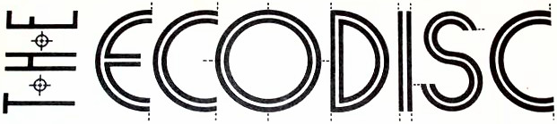

Creating may be something we are only able to do, not something we can describe or understand. For this reason, technology must always play a secondary role to the creation we wish to embody in our preserved records and our preserved documents. It would be better to lose everything we have recorded, and all of our technology, than to suffer even the slightest diminution in our ability to create.
Figuring out how to make the best possible use out of the millions of devices which already exist.
Salvage computing believes that the end of a computer product's lifecycle should be seen as a moment of celebration, a moment when its socioeconomic context can finally be reclaimed. Scavenge-friendly electronics are parts that are no longer manufactured, but that are available by the billions in landfills. Those who can manage to create new designs from scavenged parts with low-tech tools will be able to preserve electronics.
It does not advocate for going back in time, despite advocating for a dramatic decrease in use of artificial energy, but trusts in human ingenuity to turn problems into solutions, competition into co-operation and waste into resources.

Design for Encapsulation: In order to ensure that, for example, a README file will be readable by any user, distribution disks include a simple text-editing program that can display the README file. Though most users already have one on their systems, software vendors should not to assume that this will be the case.
When a file is compressed using PKZIP, a decompression program, such as PKUNZIP, is required to expand the file. However, an option in PKZIP allows a simple version of an unzip program to be bundled with each compressed file. Choosing this option creates an executable file which, when run, expands automatically to the original file, avoiding the issue of whether the recipient of a compressed file will have the appropriate decompression software on hand.
| Technique | Description | Pros | Cons |
|---|---|---|---|
| Migration | Periodically convert data to the next-generation formats | Data is instantly accessible | Copies degrade from generation to generation |
| Emulation | Mimicking the behavior of older hardware with software, tricking old programs into thinking they are running on their original platforms | Data does not need to be altered | Mimicking is seldom perfect; chains of emulators eventually break down |
| Encapsulation | Encase digital data in physical and software wrappers, showing future users how to reconstruct them | Details of interpreting data are never separated from the data themselves | Must build new wrappers for every new format and software release; works poorly for nontextual data |
| Universal virtual computer | Archive paper copies of specifications for a simple, software-defined decoding machine; save all data in a format readable by the machine | Paper lasts for centuries; machine is not tied to specific hardware or software | Difficult to distill specifications into a brief paper document |
Any sufficiently organized Piracy is indistinguishable from Preservation.
Emulation is a way of preserving the functionality and access to digital information which might otherwise be lost due to technological obsolescence. One of the benefits of the emulation strategy compared with migration is that the original data need not be altered in any way. It is the emulation of the computer environment that will change with time.
A universal virtual computer needs to be well documented, contain a bare minimum of functionality, be easily testable for compliance, and have very, very few special cases in the specification, since special cases are opportunities for incompatibility; but despite that, it needs to be a reasonable target to write a compiler for. Finally, I argue that a UVC ought to have predictable performance.
Software is bootstrappable when it does not depend on a binary seed that cannot be built from source. Software that is not bootstrappable, even if it is free software, is a serious security risk. The goal is to start from a minimal, easily inspectable binary which should be readable as source and bootstrap into a practical user interface.
Wait. What nostalgia? This is not about reliving fond memories or fetishize about an imaginary past, it's about being tactical in our choice of medium, so as to propagate a political perspective efficiently.~
- What is scavenge-friendly
- Digital-Preservation Proposals
- PADI's Notes on Emulation
- Archival with a universal virtual computer
incoming uxn devlog permacomputing permacomputing